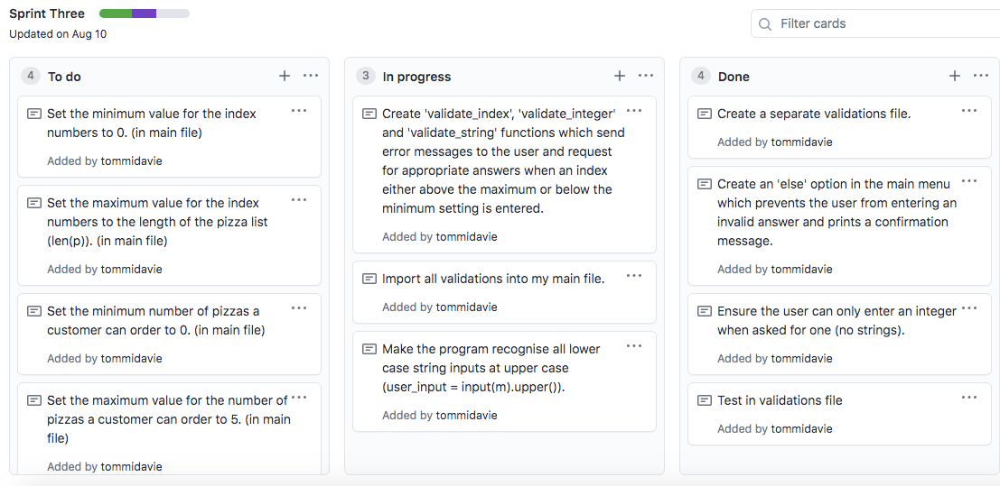

Sprint One
Sprint One Planning Board:
Sprint One Code Ouput:

Sprint One Review:
The first sprint I have completed for my program prints a very basic pizza menu for the customer when requested, along with a list of their prices. The program runs in a loop, printing the menu over and over again when the user enters 'R', quitting the program if the user enters 'Q'. If the user selects to quit, the loop terminates and a confirmation message is printed informing the user that the program has ended.
Sprint Two
Aim:
To create a function which allows the customer to order a pizza from the pizza menu and chose the quantity they would like, that works in conjunction with another function which enables the operator to review their current order status.
Stand-Up 30/7/20 :

Planning for sprint two (and for my entire program) includes a short meeting at the beginning of the working day which questions what we have done, what we intend to do and what is blocking us from doing so. On the 30th of July I had completed and tested the first sprint of my program, and began my planning for the second sprint of my program. I decided, as seen above, that I would create code which asks the user what they would like to order - and add it to their personal customer list.
Sprint Two Planning Board:

Sprint Two Planning and Testing Evidence:
An Error I Encountered:

Sprint Two Review:
What has been successful?
- The user is able to enter the pizza flavour they would like to order and the quantity of which they would like. They can do this more than once by returning to the main menu and clicking the order option once more. They can also review their current order status (the type and quantity of pizzas they have ordered) and will be sent back to the main menu once more, in case they want to add to their order or quit the program.
What are the problems?
- At this stage my program has no validation (as can be seen in the multiple screenshots of tests I have recorded above). This means that the user can enter invalid indexes and 0 values. The customer can also enter the same pizza twice and it is not recognised as the same value which has previously been ordered. Another issue is that the prices of the pizzas are not calculated and shown.
Sprint Three
Aim:
To validate the current version of my program (seen in Sprint Two) ensuring all of the unexpected user inputs are recognised by the program - notifying the customer of their mistake and preventing them from contiuing unless their issue is resolved.
Sprint Three Planning Board:

Sprint Three Planning and Testing Evidence:

Sprint Three Review:
What has been successful?
- I was able to successfully incorporate all of the validations I created in my validations file into my main file, preventing the user from continuing if they enter an unexpected input. Instances where this would occur (seen in screenshots above) include when the user is selecting how many pizzas they would like to order. If the customer enters a letter, or a number below 1 or above 5 (the pizza limit suggested in our breif) they are met with an error message which asks them to enter an input which meets these boundaries.
What are the problems?
- At this stage my program has no validation (as can be seen in the multiple screenshots of tests I have recorded above). This means that the user can enter invalid indexes and 0 values. The customer can also enter the same pizza twice and it is not recognised as the same value which has previously been ordered. Another issue is that the prices of the pizzas are not calculated and shown.
Sprint Four
Sprint Four Planning Board:
To calculate and print the total cost of the customer's pizza order, printing how much each separate pizza flavour will be individually, and the overall cost as the customer reviews and confirms their order.
Sprint Four Planning Board:

Sprint Four Planning Evidence:

Sprint Four Reflection:
During the fourth sprint of my project I created ‘cost’ and ‘total_cost’ values which were coded into the customer order function. Initially, I had coded ‘cost = amount * 18.50’. I found this to be a problem as the gourmet pizzas I was intending to add to my menu were different prices, ($21.50) so the cost printed would be inaccurate. This was a problem as it would be very difficult to update the ‘total_cost’ accurately.
The prices of the pizzas in the 2 dimensional pizza list were strings. By changing this to floats (numbers) I could treat them as numbers - multiplying them by the quantity of pizzas the customer has ordered. As a result of changing these string values, this made it much easier to calculate the ‘total_cost’ of the pizza order.
Relevant Implications:
Usability
Can the user recognise, diognose and recover from errors? Can the application correct errors without worrying the user? Restore to a previous state (is there back to menu options)?
Visibility of System Status
Confirmation messages
Functionality
A practical works well. Is it free from bugs? Does it add up and store values correctly? Does it not crash? - has been adressed by regular testing processes, testing individual functions, testing their integration into the main program, designed and executed more extensive (planning order stories.
Future Proofing
Is it easy to update or add new features to the program? Can a different programmer do this? Is my code easy to understand? - adressed by the building the program around a function structure (where each new feature is a separate function/s), this can be easily integrated into the main program. Comments and doc strings are used to describe functions and other sections of code so another programmer can quickly on boarded. Use of code checker ensures tab indents, spacings, line lengths, fit with python conventions.